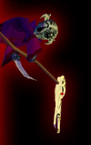

The Apprentice?*Lifebane the Dark elf Necromancer crouches over a decaying corpse, retrieving an organ vital to his arts. He hears a noise and turns to see a young Dark elf entering into his quarters. Lifebane eyes the young one and realizes who this must be... the child of Ixzathul, the one that wishes to study necromancy.* Ahh... come closer young one. Sit, pay no mind to the bones scattered about. What is thisussahear, dos aspire to become a necromancer when dos grow older? Well then, dos are wiser then dos years little one, for therein lies the true power. Necromancy alone has control over that which all others fear.... Death. No other can bring back the dead to serve the living. No other can steal the vital life forces of another to better dosrself with. Nay young one, It is a wise decision dos make. Relax, let me tell dos of the wonders of necromancy. The necromancer specializes in hurting others to heal themselves. They also specialize in the summoning of the dead to serve their purposes. Eventually they develop powers beyond the scope of this, but that is to be learned much later in life... for now these two concepts are sufficient to describe the Necromancers life. dos will be despised by many, merchants will rarely deal with our kind, and even then they will tend to abuse the Necromancer with outrageous rates. But better expensive wares then noneussasuppose. It is important to note that many will attack our kind on sight. Beware these fools, for in their ignorance they condemn themselves. As dos power grows, return and teach these fools the error in their ways! And dos have chosen a hard path indeed for Dark elves are not welcome in most civilized areas, yet alone a dark elf necromancer! Beware! Necromancers are dark, scheming beings who spend all their time practicing their arts. It is said that most aspire to cheat the inevitable death through their magic. Perhaps this is true. But this road is a long road that is full of death, decay, disease, and suffering. Revel in this, fear it not for it will be dost to control. Death is the Necromancers friend, disease a tool, decay... ahhh.. decay. A beautiful thing. So much so that the great god Innoruuk, bringer of plagues blesses all who serve him. Serve the Plague bringer and revel in the death and destruction. Fear not the worship of other gods since all the evil gods are allied. The plague bringer is the natural choice for our trade as is believed by many a necromancer. Enjoy the suffering dos inflict on others, gain power, amass dark magics... summon the dead to pummel dos enemies. All the while, just stand back and enjoy the suffering. Of course dos can feel free to add to their discomfort by draining their life as they fight dos undead minions. Ahhh... such is the life of the necromancer.... Pain, Death, Decay, Disease, Famine... these are to dos what sunlight, wine, laughter, and love are to the more frail beings in the land. Let them fear dos! Ha! It is good they do, for at the drop of a gold coin, dos would suck their soul away just to hear their scream of agony. Blood as Ice... never forget... dos are hunted and hunter.. remember this and dos will do well. *Lifebane stops and notices the frightened look in the young dark elf's eyes.* Hmm.. Perhaps dos have changed dos mind little one? Do not be frightened. The choice is up to dos...become one of the weak hearted or one of the strong. It is dos choice.. no harm will come to dos if dos change dos mind... Go now... think on this little one. *The dark elf child runs out of the quarters. Lifebane cracks an evil smile...* He will return.ussa have seen it in the entrails of the halfling, that one will return. And one day, he will be a mighty Necromancer. *Lifebane returns to his previous tasks with the decaying corpse* Lussafebane Lussal'Valdruk |
